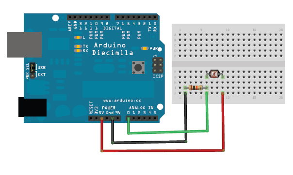

University of Victoria
Jentery Sayers
Spring 2014
Description
Format
Stipulations
Objectives
Assessment
Policies
#FutureEd
The primary purpose of this workshop is not to give you an in-depth understanding of how to build circuits or program microcontrollers. Instead, it is to better understand (through hands-on practice) Kirschenbaum's "medial ideology" and Bogost's "procedural rhetoric." For example, how does working with Arduino help us grasp the "full circuit" of storage, processing, and expression (or the limits of reducing expression to screens)? Or how does it underscore the challenges of making arguments about processes through processes?
For this workshop, you'll need to download the Arduino IDE. Then peruse these Adafruit instructions for using a photocell to take analog light measurements, which are then expressed via your machine's serial monitor.
Here's a breadboard view of the simple circuit we'll build (using an Uno): 
And (care of Adafruit), here's the sketch we'll use (which, line by line, I'll walk you through):
/* Photocell simple testing sketch.
Connect one end of the photocell to 5V, the other end to Analog 0.
Then connect one end of a 10K resistor from Analog 0 to ground
For more information see http://learn.adafruit.com/photocells */
int photocellPin = 0; // the cell and 10K pulldown are connected to a0
int photocellReading; // the analog reading from the analog resistor divider
void setup(void) {
// We'll send debugging information via the Serial monitor
Serial.begin(9600);
}
void loop(void) {
photocellReading = analogRead(photocellPin);
Serial.print("Analog reading = ");
Serial.print(photocellReading); // the raw analog reading
// We'll have a few threshholds, qualitatively determined
if (photocellReading < 10) {
Serial.println(" - Dark");
} else if (photocellReading < 200) {
Serial.println(" - Dim");
} else if (photocellReading < 500) {
Serial.println(" - Light");
} else if (photocellReading < 800) {
Serial.println(" - Bright");
} else {
Serial.println(" - Very bright");
}
delay(1000);
}